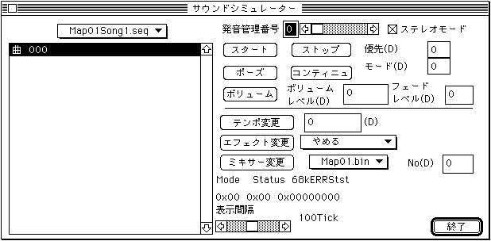

★
SOUND Manual
★
サウンドシュミレータマニュアル
▲
戻る
｜
進む
▼
サウンドシュミレータマニュアル
サウンドシミュレーター
ここを選択すると、次のウィンドウが表示されます。

現在アクティブなカレントマップにシーケンスバンクが転送されていれば、 ファイルリストボックスの上のプルダウンメニューでシーケンスバンクの選択ができます。 シーケンスバンクを選択すると上記のようにバンク内に含まれているシーケンス名が一覧表示されます。 ここで発音したいシーケンスを選択して、下記のボタンで発音をコントロールします。
発音管理番号
発音管理番号の設定を行います。設定範囲は0→7です。
ステレオモード
ステレオかモノかのモードを切り替えます。モノ曲には無効になります。
スタート
発音を開始します。
ストップ
発音を停止します。
優先
シーケンスの発音優先順位を指定します。0→127で、0が一番高い優先度です。
ポーズ
発音を一時停止します。
コンティニュ
一時停止から再スタートします。
モード
各種モードが設定できます。くわしくはSATARN Sound Driverマニュアルを参照してください。
ボリューム
シーケンスのボリュームレベルとFade in(out)のスピードを設定します。
ボリュームレベル
音量を設定します。0→127で127が最大音量ですFade Levelとコンビネーションで使用します
フェードレベル
Fade In / Fade OutのFade Levelを指定します。0→255で、255で一番ゆっくり変化します。
テンポ変更
演奏するテンポを変更します。
変更したいテンポ値を指定します。プラスの値で速く、マイナスの値で遅くなります。
-32768→+32767で4096で2倍(マイナス時は2分の1)です。
エフェクト変更
DSPプログラムを切り替えます。プルダウンメニューにより選択できます。
ミキサー変更
Mixerを切り替えます。プルダウンメニューにより選択できます。
No
MixerNumberを設定します。0→127
Mode
0x00
Sound Driverが現在どのような仕事をしているかを表示します。
Status
0x00
Sound Driverが現在どのような状態にあるかを表示します。
68kERRStst
0x00000000
サウンドドライバーの68000ステータスビットを参照して内容を表示します。
表示間隔
Mode Statusの割り込み間隔を設定します。8Tickから200Tickまでで1Tick1/60秒です。
終了
Sound Simurationを終了し、ウィンドウを閉じます。
各コントロールコマンドの内容の詳細は「サウンドドライバプログラマーズガイド/
サウンドコントロールコマンド詳細
」に記述してありますのでそちらを参照してください。
▲
戻る
｜
進む
▼
★
SOUND Manual
★
サウンドシュミレータマニュアル
Copyright SEGA ENTERPRISES, LTD., 1997
 ★SOUND Manual
★サウンドシュミレータマニュアル
★SOUND Manual
★サウンドシュミレータマニュアル
 ★SOUND Manual
★サウンドシュミレータマニュアル
★SOUND Manual
★サウンドシュミレータマニュアル